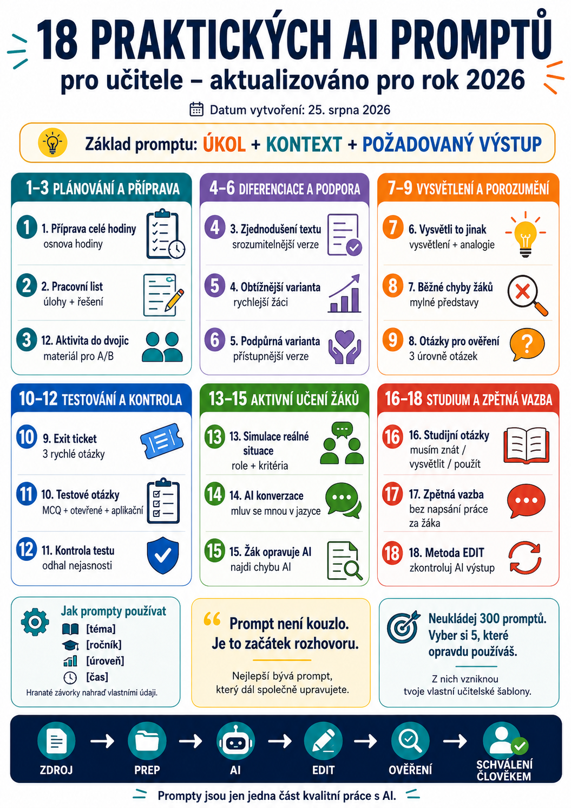

Umělá inteligence může učiteli pomoci s přípravou výuky, pracovními listy, diferenciací, testy, vysvětlováním učiva nebo zpětnou vazbou.
Nemusíme ale pokaždé začínat prázdným chatovacím oknem a přemýšlet:
Co tam vlastně mám napsat?
Proto jsme připravili 18 praktických promptů, které lze upravit pro vlastní předmět, třídu a konkrétní situaci.
Nejde o příkazy určené pouze pro jeden AI nástroj. Základní principy lze využít v různých generativních AI systémech.
Současná doporučení pro učitele se stále více přiklánějí k jednoduchému principu:
OpenAI například ve své metodice pro učitele z května 2026 doporučuje při tvorbě promptu jasně určit, co má AI udělat, pro koho je výstup určen a jak má výsledná odpověď vypadat.
Stejnou logiku můžeme rozšířit o práci se zdroji, diferenciaci a kontrolu výsledku.

Jak prompty používat
V hranatých závorkách najdete části, které je potřeba nahradit vlastními údaji.
Například:
[ročník] → 2. ročník SŠ
[úroveň] → A2
[čas] → 45 minut
Prompty není nutné používat slovo od slova.
Berte je jako šablony, které si upravíte podle vlastní výuky.
1. Příprava celé vyučovací hodiny
Žáci již znají [předchozí znalosti].
Cílem hodiny je, aby žáci na konci dokázali [vzdělávací cíl].
Hodina trvá [čas] minut.
Navrhni:
• úvodní aktivitu,
• krátké vysvětlení,
• hlavní aktivitu,
• způsob ověření porozumění,
• závěrečné shrnutí nebo exit ticket.
U každé části uveď přibližný čas a stručné instrukce pro učitele.
Kdy se hodí?
Když potřebujeme první návrh celé hodiny, který následně přizpůsobíme konkrétní třídě.
2. Vytvoření pracovního listu
Vycházej z následujícího materiálu:
[vložit text nebo přiložit dokument]
Cílem je procvičit [dovednost / učivo].
Vytvoř [počet] různých typů úloh od jednoduchých ke složitějším.
Pracovní list má být přibližně na [čas] minut.
Na konci vytvoř samostatné řešení pro učitele.
Nepřidávej odborné informace, které nelze doložit z přiloženého zdroje.
3. Zjednodušení obtížného textu
Zachovej všechny důležité informace a odborné termíny, které se žáci potřebují naučit.
Zkrať dlouhé věty, vysvětli obtížná slova a rozděl text do krátkých odstavců.
Za text přidej slovníček nejvýše [počet] důležitých pojmů.
Nevymýšlej nové informace.
Text:
[vložit text]
4. Vytvoření obtížnější varianty
Zachovej stejný vzdělávací cíl, ale:
• zvyš náročnost přemýšlení,
• přidej úlohy vyžadující vysvětlení nebo argumentaci,
• omez jednoduché mechanické procvičování,
• přidej jednu rozšiřující úlohu.
Původní aktivita:
[vložit]
5. Vytvoření podpůrné varianty
Zachovej stejný vzdělávací cíl.
Uprav pouze způsob zadání:
• zkrať instrukce,
• rozděl složité úkoly na jednotlivé kroky,
• zvýrazni klíčové informace,
• přidej jeden vypracovaný příklad,
• omez zbytečně komplikované formulace.
Nesnižuj obsah na úroveň, při které by žák přestal procvičovat požadovanou dovednost.
Materiál:
[vložit]
6. Vysvětli to jinak
Potřebuji žákům [ročník / věk] vysvětlit pojem [pojem].
Žáci už znají [předchozí znalosti].
Připrav:
1. velmi jednoduché vysvětlení,
2. běžný příklad ze života,
3. přirovnání nebo analogii,
4. odbornější vysvětlení,
5. jednu otázku, kterou ověřím, zda tomu žáci skutečně rozumí.
Nepoužívej odborné termíny bez vysvětlení.
Podobný postup doporučuje i aktuální metodika OpenAI pro pedagogy: při tvorbě vysvětlení je užitečné AI poskytnout úroveň žáků, jejich předchozí znalosti a požádat o vysvětlení, příklady a analogii.
7. Najdi běžné chyby žáků
Téma je [téma].
Uveď [počet] nejčastějších chyb nebo mylných představ, které mohou mít žáci na úrovni [ročník / úroveň].
U každé napiš:
• v čem chyba spočívá,
• proč pravděpodobně vzniká,
• jednoduchý způsob, jak ji žákovi vysvětlit,
• krátkou kontrolní otázku, podle které poznám, zda už problém pochopil.
Pokud si nejsi jistý, že je některá chyba skutečně běžná, výslovně to označ.
8. Otázky pro ověření porozumění
Nechci pouze otázky na zapamatování faktů.
Rozděl je do tří úrovní:
A – základní porozumění
B – použití znalosti
C – vysvětlení a argumentace
Ke každé otázce vytvoř stručnou očekávanou odpověď.
Učivo:
[vložit text]
9. Exit ticket na konec hodiny
Má zabrat maximálně [2–5] minut.
Obsahuje:
1. jednu otázku ověřující hlavní myšlenku hodiny,
2. jednu otázku vyžadující použití znalosti,
3. jednu sebereflexní otázku typu „Co mi ještě není jasné?“
Přidej stručný návod, podle čeho může učitel odpovědi rychle vyhodnotit.
10. Vytvoření testových otázek
Používej pouze informace obsažené ve zdroji.
Vytvoř:
• [počet] otázek s výběrem odpovědi,
• [počet] krátkých otevřených otázek,
• [počet] aplikačních úloh.
U otázek s výběrem odpovědi zajisti, aby byla jednoznačně správná pouze jedna možnost.
Nevkládej správnou odpověď nápadně delší nebo podrobnější než ostatní možnosti.
Na konci vytvoř klíč správných odpovědí.
Poté proveď vlastní kontrolu a upozorni mě na otázky, které mohou být nejednoznačné.
11. Kontrola již vytvořeného testu
Neřeš pouze pravopis.
U každé otázky ověř:
• zda je jednoznačná,
• zda odpovídá zadanému učivu,
• zda neobsahuje nechtěnou nápovědu,
• zda není více odpovědí správných,
• zda odpovídá požadované obtížnosti.
Test nepřepisuj automaticky.
Nejprve vytvoř tabulku:
Otázka | Problém | Doporučená změna
Test:
[vložit]
12. Aktivita do dvojic
Aktivita má trvat přibližně [čas] minut.
Každý žák musí během aktivity aktivně pracovat.
Připrav:
• stručné instrukce,
• materiál pro žáka A,
• materiál pro žáka B,
• očekávaný výsledek,
• rychlou kontrolu na konci.
Aktivita nesmí být založena pouze na opisování odpovědí.
13. Simulace reálné situace
Žáci mají procvičit [dovednost].
Situace má odpovídat jejich věku a pokud možno skutečnému životu nebo budoucímu povolání.
Připrav:
• popis situace,
• role,
• informace, které jednotlivé role dostanou,
• úkol,
• kritéria úspěchu,
• tři otázky pro následnou reflexi.
14. AI jako partner pro jazykovou konverzaci
Téma je [téma].
Chovej se jako [role – zákazník, personalista, turista, kolega…].
Pokládej vždy jen jednu otázku a počkej na moji odpověď.
Neopravuj každou chybu okamžitě, pokud nebrání porozumění.
Po [počet] výměnách konverzaci zastav a napiš:
• tři věci, které se mi povedly,
• maximálně tři nejdůležitější chyby,
• správnější varianty,
• jedno doporučení pro další procvičení.
Nepokračuj v konverzaci místo žáka.
15. Učitel chybuje – žák opravuje AI
Zahraj roli žáka, který se téma právě učí.
Vysvětli mi jednu část učiva, ale udělej ve vysvětlení jednu realistickou chybu nebo mylný předpoklad.
Neprozrazuj, kde chyba je.
Počkej, až ji najdu a vysvětlím.
Potom mi řekni, zda jsem problém správně odhalil, a případně mě nasměruj další otázkou.
Nedávej správnou odpověď okamžitě.
Tento typ použití AI je zajímavý právě tím, že žák nemá odpověď pouze přijmout, ale kriticky ji hodnotit. Podobné aktivity, v nichž AI hraje roli chybujícího studenta a skutečný žák její vysvětlení opravuje, doporučují i současné vzdělávací materiály OpenAI.
16. Převod materiálu na studijní otázky
Nevytvářej otázky k informacím, které ve zdroji nejsou.
Rozděl je do tří skupin:
Musím znát
základní pojmy a fakta
Musím umět vysvětlit
vztahy a principy
Musím umět použít
aplikace, příklady a řešení problémů
Ke každé otázce připoj místo ve zdroji nebo část textu, ze které vychází, pokud ji lze určit.
Zdroj:
[vložit nebo přiložit]
17. Zpětná vazba bez napsání práce za žáka
Úkolem není text přepsat za autora.
Hodnoť podle těchto kritérií:
[vložit kritéria / rubriku]
Nejprve napiš:
• dvě konkrétní silné stránky,
• tři oblasti, které je možné zlepšit,
• u každé jednu otázku nebo nápovědu, která autora dovede k vlastní opravě.
Nevytvářej hotovou opravenou verzi, dokud o ni výslovně nepožádám.
Text:
[vložit]
18. Zkontroluj vlastní AI výstup metodou EDIT
Poslední prompt je trochu jiný.
Slouží ke kontrole toho, co už AI vytvořila.
E – Evaluate:
Zhodnoť, zda výstup skutečně splnil moje zadání.
D – Determine:
Označ faktická tvrzení, která by měla být ověřena z externího zdroje.
I – Identify:
Najdi možné chyby, nejasnosti, stereotypy, nepodložená tvrzení nebo důležité informace, které mohou chybět.
T – Transform:
Navrhni konkrétní změny.
Nevydávej vlastní předchozí tvrzení za ověřená pouze proto, že jsi je vytvořil.
Pokud něco nevíš nebo nemůžeš ověřit, řekni to otevřeně.
Pozor ale na jednu věc:
AI kontrolující sama sebe nenahrazuje kontrolu člověkem ani ověření zdrojů.
Je to další filtr, ne razítko pravdivosti.
Jeden univerzální prompt místo osmnácti?
Pokud si nechceme ukládat mnoho různých šablon, můžeme použít i jeden základ.
Cílem je [vzdělávací cíl].
Vycházej z [zdroj / přiložený materiál].
Žáci již znají [předchozí znalosti].
Výstup má splňovat tyto podmínky:
[čas / délka / počet úloh / jazyk / forma].
Nejprve vytvoř návrh.
Potom krátce zkontroluj, zda splňuje všechny uvedené požadavky, a upozorni mě na informace, které bych měl/a před použitím ověřit.
Tohle je velmi dobrý univerzální základ.
Nemusíme vytvořit dokonalý prompt napoprvé
Práce s AI nemusí vypadat:
Často funguje lépe konverzace.
Například:
Druhá úloha je příliš těžká. Zjednoduš ji.
Přidej jeden vypracovaný příklad.
Teď vytvoř řešení pro učitele.
Současná doporučení OpenAI pro učitele výslovně počítají s tím, že první odpověď můžeme dále upravovat pomocí následných pokynů, například změnou délky, formátu nebo obtížnosti.
Prompt tedy není jednorázový příkaz.
Je to často začátek rozhovoru.
Když máme vlastní zdroje, používejme je
Jedna z největších změn oproti prvním rokům generativní AI je možnost pracovat přímo s vlastním kontextem a materiály.
Místo:
Vytvoř test o tomto tématu.
je často lepší:
Tady je materiál, ze kterého se žáci učili. Vytvoř test pouze z něj.
AI pak nepracuje pouze s obecnou představou o tématu.
Pracuje s konkrétním materiálem, který používáme ve výuce.
A to může být pro učitele výrazně užitečnější.
Prompt není nejdůležitější část práce
Dobrý prompt pomáhá.
Ale ani nejlepší prompt nezaručuje bezchybný výsledek.
OpenAI ve svých aktuálních materiálech pro pedagogy stále upozorňuje, že model může poskytovat nesprávné informace a že učitel zůstává odborníkem, který musí výsledek před použitím posoudit.
Proto platí postup, který už známe:
Prompty jsou pouze jedna část tohoto procesu.
Uložte si jen ty, které skutečně používáte
Není potřeba mít složku se třemi sty „zázračnými prompty“.
To většinou skončí stejně jako šuplík s kabely.
Člověk ví, že tam všechno je, ale nikdy nenajde přesně to, co potřebuje.
Praktičtější je vybrat si například pět promptů, které odpovídají vaší práci:
- příprava hodiny,
- pracovní list,
- diferenciace,
- kontrola testu,
- zpětná vazba.
Ty si postupně upravte podle svého stylu práce.
Po několika použitích z nich vzniknou vlastní učitelské šablony.
A právě ty mají obvykle mnohem větší hodnotu než univerzální seznam nalezený na internetu.
Co následuje?
V dalším článku se podíváme na další praktickou oblast:
Jak může AI skutečně ušetřit učiteli práci
Ne formou slibu, že „AI ušetří deset hodin týdně“, ale konkrétně:
- co se vyplatí delegovat,
- co dělat společně s AI,
- co automatizovat,
- kde AI naopak práci spíš přidává,
- a které činnosti by měl učitel stále držet pevně ve vlastních rukou.